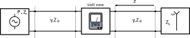
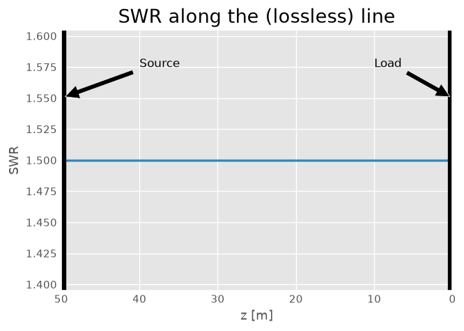
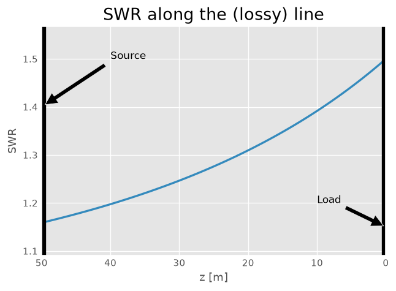
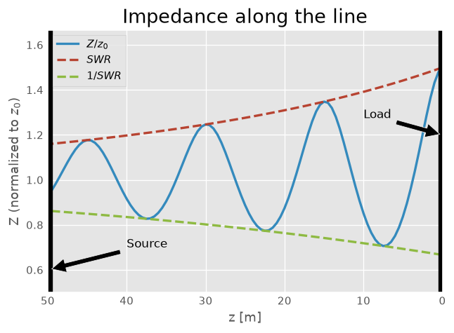

How does the SWR vary along a line?#
Let’s assume a 10 MHz source powering an antenna (of load \(Z_L\)) through a transmission line of length \(L\). Depending on the location of the SWR-meter, what does one would read?
This notebook is inspired from the reference: “Facts About SWR, Reflected Power, and Power Transfer on Real Transmission Lines with Loss” by Steve Stearns given at ARRL Pacificon Antenna Seminar in 2010.

Let solve this question using scikit-rf. But first, the traditional Python imports:
[1]:
%matplotlib inline
[2]:
import matplotlib.pyplot as plt
import numpy as np
import skrf as rf
from skrf.constants import c
from skrf.tlineFunctions import voltage_current_propagation, zl_2_swr, zl_2_zin
[3]:
Lossless lines#
Let’s start with a lossless line of propagation constant \(\gamma=j\beta\) and characteristic impedance \(z_0=50\Omega\) (real).
[4]:
freq = rf.Frequency(10, unit='MHz', npoints=1)
[5]:
Below we calculate the SWR of the line as a function of \(z\) the line length measured from the load (\(z=0\) at the load, \(z=L\) at the source).
[6]:
z = np.linspace(start=L, stop=0, num=301)
SWRs = zl_2_swr(z0=Z_0, zl=zl_2_zin(Z_0, Z_L, gamma*z))
[7]:
fig, ax = plt.subplots()
ax.plot(z, SWRs, lw=2)
ax.set_xlabel('z [m]')
ax.set_ylabel('SWR')
ax.set_title('SWR along the (lossless) line')
ax.invert_xaxis()
ax.axvline(0, lw=8, color='k')
ax.axvline(L, lw=8, color='k')
ax.annotate('Load', xy=(0, 1.55), xytext=(10, 1.575),
arrowprops=dict(facecolor='black', shrink=0.05),
)
ax.annotate('Source', xy=(50, 1.55), xytext=(40, 1.575),
arrowprops=dict(facecolor='black', shrink=0.05),
)
[7]:
Text(40, 1.575, 'Source')

As expected, the SWR is the same everywhere along the line as the forward and backward wave amplitudes are also the same along the line.
Lossy Lines#
Let’s take the previous example but this time on a lossy line. The line is defined with a propagation constant \(\gamma=\alpha + j\beta\) :
[8]:
alpha = 0.01 # Np/m. Here a dummy value, just for the sake of the example
gamma = alpha + 1j*beta
[9]:
z = np.linspace(0, L, num=101)
SWRs = zl_2_swr(z0=Z_0, zl=zl_2_zin(Z_0, Z_L, gamma*z))
[10]:
fig, ax = plt.subplots()
ax.plot(z, SWRs, lw=2)
ax.set_xlabel('z [m]')
ax.set_ylabel('SWR')
ax.set_title('SWR along the (lossy) line')
ax.invert_xaxis()
ax.axvline(0, lw=8, color='k')
ax.axvline(L, lw=8, color='k')
ax.annotate('Load', xy=(0, 1.15), xytext=(10, 1.2),
arrowprops=dict(facecolor='black', shrink=0.05),
)
ax.annotate('Source', xy=(50, 1.4), xytext=(40, 1.5),
arrowprops=dict(facecolor='black', shrink=0.05),
)
[10]:
Text(40, 1.5, 'Source')

For a lossy line, the SWR is maximum at the load and decreases to be minimum at the source side.
Let’s see how the impedance varies along the line:
[11]:
Zins = zl_2_zin(Z_0, Z_L, gamma*z)
fig, ax = plt.subplots()
ax.plot(z, np.abs(Zins/Z_0), lw=2, label='$Z/z_0$')
ax.plot(z, SWRs, lw=2, ls='--', label=r'$SWR$')
ax.plot(z, 1/SWRs, lw=2, ls='--', label=r'$1/SWR$')
ax.set_xlabel('z [m]')
ax.set_ylabel('Z (normalized to $z_0$)')
ax.set_title('Impedance along the line')
ax.invert_xaxis()
ax.axvline(0, lw=8, color='k')
ax.axvline(L, lw=8, color='k')
ax.annotate('Load', xy=(0, 1.2), xytext=(10, 1.275),
arrowprops=dict(facecolor='black', shrink=0.05),
)
ax.annotate('Source', xy=(50, 0.6), xytext=(40, 0.7),
arrowprops=dict(facecolor='black', shrink=0.05),
)
ax.legend()
[11]:
<matplotlib.legend.Legend at 0x71fe10309c10>

The previous result is due to the fact that voltages and currents vary along the transmission line:
[12]:
V_s = 1
Z_in = zl_2_zin(Z_0, Z_L, gamma*z)
# Z_s = Z_0
V_in = V_s * Z_in/(Z_0 + Z_in)
I_in = V_in/(Z_0 + Z_in)
# note that here we are going from source to load
V, I = voltage_current_propagation(V_in, I_in, Z_0, gamma*z)
[13]:
fig, ax = plt.subplots(2,1,sharex=True)
ax[0].plot(z, np.abs(V), lw=2)
ax[1].plot(z, np.abs(I), lw=2, color='C1')
ax[1].set_xlabel('z [m]')
ax[0].set_ylabel('|V| (V)')
ax[1].set_ylabel('|I| (A)')
ax[0].set_title('Voltage')
ax[1].set_title('Current')
[a.axvline(0, lw=8, color='k') for a in ax]
[a.axvline(L, lw=8, color='k') for a in ax]
ax[1].annotate('Load', xy=(50, 0.0075), xytext=(40, 0.0075),
arrowprops=dict(facecolor='black', shrink=0.05))
ax[1].annotate('Source', xy=(0, 0.001), xytext=(10, 0.001),
arrowprops=dict(facecolor='black', shrink=0.05))
[13]:
Text(10, 0.001, 'Source')